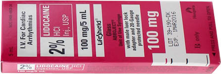

ACLS PHARMACOLOGY
MAGNESIUM SULPHATE

- In emergent situation, Magnesium may be given as a loading dose of 2 g in 100 mL D5W, given over 1-2 minutes, followed by an infusion of 0.5 to 1.0 g per hour.
- If non-emergent (ie patient is stable) may be given over 5-60 minutes.
- Magnesium is not recommended in cardiac arrest except when arrhythmias are suspected to be caused by magnesium deficiency or if you see Torsades de Pointes.
- Hypotension and Asystole can occur during rapid administration.
PROCAINAMIDE HCl

Procainamide is used for the conversion of supraventricular arrhythmias ( AF and atrial flutter) to sinus rhythm , for control of rapid ventricular rate due to accessory pathway conduction in preexcited atrial arrhythmias, and for wide-complex tachycardias that cannot be identified clearly as being of supraventricular or ventricular origin.
- Loading Dose: 1 g procainamide, diluted in 50 mL D5W is administered at 1 mL/min (20 mg/minute) for 25 to 30 min.
-
Until one of these endpoints reached:
- Arrhythmia is suppressed,
- Hypotension
- QRS complex is prolonged by 50% from its original duration
- Total of 17 mg/kg (1.2 g for a 70-kg patient) of the drug has been given.
-
Maintenance dose:
- Preparation: Add 1 gm to 500 ml D5W. Resultant concentration: 2mg/ml
- 1 to 4 mg/min. The maintenance dosage should be reduced in the presence of renal failure.
- Oral procainamide for long-term maintenance therapy: 250 mg every 3 hours and up.
- Procainamide should be avoided in patients with Torsades de Pointes.
-
Hypotension may occur if the drug is
injected too rapidly.
DILTIAZEM HCl


ATENOLOL
Reduce the incidence of VF significantly in post-MI patients who did not receive fibrinolytic agents.
5 mg slow IV over 5 minutes, and then wait 10 minutes.
If the first dose was well tolerated, give a second dose of 5 mg slow IV over 5 minutes
Oral Maintenance: 50 mg every 12 hours.
METOPROLOL
Metoprolol is given in doses of 5 mg by slow IV push at 5-minute intervals to a total of 15 mg.
An oral regimen is then initiated 15 minutes after the last IV dose at 50 mg twice daily for 24 hours and increased to 100 mg twice a day, as tolerated.
ATROPINE
Atropine is used for symptomatic sinus bradycardia .
The dose of atropine for asystole and slow pulseless electrical activity is 1.0 mg IV and repeated in 3 to 5 minutes if asystole persists.
For bradycardia the dose is 0.5 to 1.0 g IV every 3 to 5 minutes to a total dose of 0.04 mg/kg.
Atropine is not indicated in bradycardia from type II AV block and third-degree block.
ACE INHIBITORS
Improves LV function in post-MI patients
Reduces sudden death and recurrent MI
Used in acute MI
ADENOSINE
Depresses AV node and sinus node activity.
Used for stopping arrhythmias that have a re-entry pathway including the AV node. ( PSVT )
Initial dose 6-mg rapid bolus over 1 to 3 seconds, followed by a 20-mL saline flush . Half-life of adenosine is <5 seconds
In 1-2 minutes a 12 mg dose my be repeated.
Adenosine is used in stable tachycardia that shows narrow and regular QRS complexes. Do NOT use if irregular, may precipitate VF.
Adenosine is also used in stable Ventricular Tachycardia that is regular and monomorphic. Do NOT use if irregular.
AMIODARONE

Amiodarone 300mg IV diluted in 20ml D5W IV SLOW PUSH, (You are giving Amiodarone between the third and fourth shocks) while CPR continues. Amiodarone is diluted in 20 ml of D5W before administration. It is not available ready-made. Do not let this delay the next shock. Keep in mind the contraindications for using Amiodarone : 2nd or 3rd degree AV block. Contains Iodine, consider hypersensitivity. Most common side effects are hypotension and bradycardia.
If Amiodarone is successful, this is the maintenance dose: 1mg/hr for 6 hours followed by 0.5mg/hr for upto 72 hours. Inline filter should be used, and a glass bottle should be used for administrations for over 2 hours. Maximum cumulative dose that can be given in a 24 h period is 2.2 gm. When it is time to transition from IV to oral Amiodarone, the starting dose is 200mg po q6-8h for one week followed by 200 mg po q12 for one week followed by 200 mg po qd.
The major adverse effects from amiodarone are hypotension and bradycardia, which can be prevented by slowing the rate of drug infusion or can be treated with fluids, pressors, chronotropic agents, or temporary pacing.
LIDOCAINE
Lidocaine can be used in Ventricular Fibrillation/ Pulseless VTach that is refractory to Amiodarone.
- Initial dose: 1 to 1.5 mg/kg IV/IO
- Optional additional doses 0.5 to 0.75 mg/kg IV push, repeat in 5 to 10 minutes
- Maximum 3mg/kg cumulative.
- Maintenance dose 1-4mg/minute


Read Other Page
Read All Page
Ventricular Fibrillation
It this was an unwitnessed arrest, meaning it did not happen in front of you, you should give him 5 cycles of CPR...
Read More
Infant Cpr
Perform 30 chest compressions. Use two fingers and deliver the compressions over the breastbone, just below the nipple line...
Read More

Cpr General Principles
CPR sequence is Compressions- Airway - Breathing. The only exception is drowning victims where the sequence is...
Read More